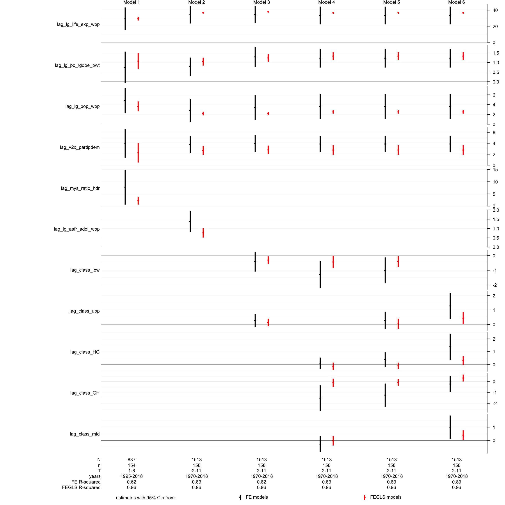
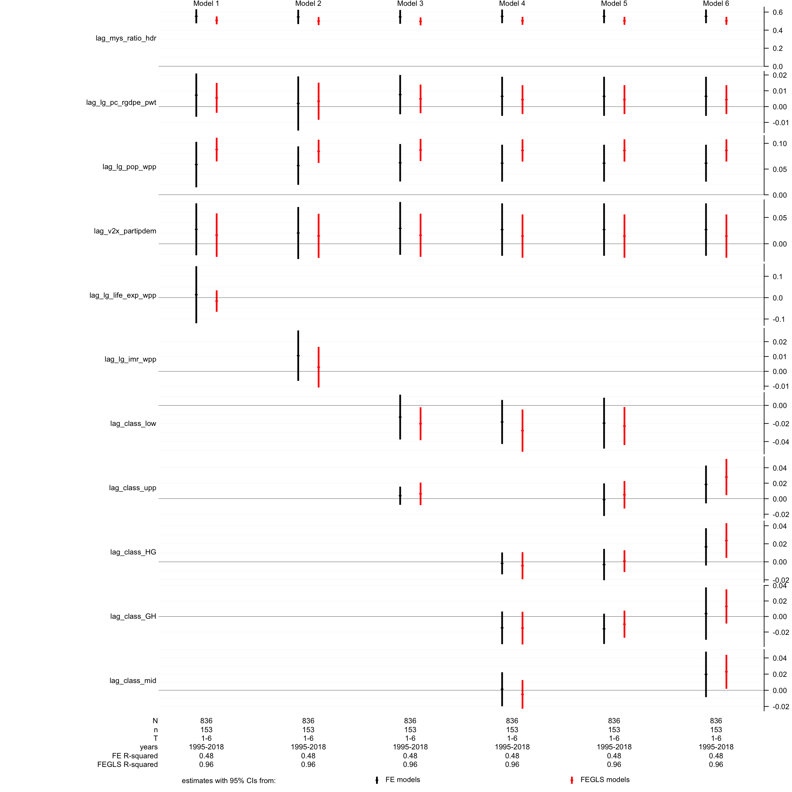

Panel Regressions
IsTrue <- function(x) { !is.na(x) & x }
load("_data/LSCMWG_working_class.RData")
vars <- c("pc_rgdpe_pwt", "pop_wpp", unlist(variables[c("health_full", "gender_full", "conflict_incidence",
"death_rates", "measurement_models", "political")],
use.names = FALSE),
paste("perf", unlist(variables[c("health", "gender")], use.names = FALSE), sep = "_"))
dfp <- df[, c("country", "year", "period", "health_class", "gender_class",
"class", "class_vv", "class_low", "class_upp", vars)]
dfp <- dfp %>% dplyr::arrange(country, period, year)
dfp <- dfp %>% group_by(country, period) %>%
mutate(across(all_of(vars), ~mean(.x, na.rm = TRUE), .names = "{col}"), .keep = "all")
dfp[, vars] <- lapply(dfp[, vars], function(col) {
col[is.nan(col)] <- NA
return(col)
})
take_logs <- c("pc_rgdpe_pwt", "pop_wpp", "life_exp_wpp", "mys_ratio_hdr")
take_logs_negative <- c("imr_wpp", "asfr_adol_wpp")
dfp[, paste("lg", take_logs, sep = "_")] <- lapply(dfp[, take_logs], log)
dfp[, paste("lg", take_logs_negative, sep = "_")] <- lapply(dfp[, take_logs_negative],
function(col) { -log(-col) })
# summary(dfp[, c(take_logs, take_logs_negative)])
viol_vars <- c("conflict_internal", "war_internal", "conflict_non_state",
"conflict_one_sided", "latentmean_fariss", "v2cltort", "v2clkill")
viol_vars_log <- c("deaths_all_int_rate", "deaths_civilians_int_rate", "deaths_civilians_osv_rate",
"deaths_all_nsc_rate", "deaths_civilians_nsc_rate", "deaths_all_ucdp_rate", "hom_odcwho_rate")
dfp[, paste("lg", viol_vars_log, sep = "_")] <- lapply(dfp[, viol_vars_log], function(col) { log(col + 1) })
dfp$health_class_low <- NA
dfp$health_class_low[dfp$health_class < 3] <- 1
dfp$health_class_low[dfp$health_class >= 3] <- 0
dfp$health_class_upp <- NA
dfp$health_class_upp[dfp$health_class > 3] <- 1
dfp$health_class_upp[dfp$health_class <= 3] <- 0
dfp$gender_class_low <- NA
dfp$gender_class_low[dfp$gender_class < 3] <- 1
dfp$gender_class_low[dfp$gender_class >= 3] <- 0
dfp$gender_class_upp <- NA
dfp$gender_class_upp[dfp$gender_class > 3] <- 1
dfp$gender_class_upp[dfp$gender_class <= 3] <- 0
dfp_lag <- dfp <- dfp[dfp$year %in% c(seq(1960, 2015, 5), 2018), names(dfp) != "period"]
names(dfp_lag)[!names(dfp_lag) %in% c("country", "year", "period")] <-
paste("lag", names(dfp_lag)[!names(dfp_lag) %in% c("country", "year", "period")], sep = "_")
dfp_lag$year <- dfp_lag$year + 5
dfp_lag$year[dfp_lag$year == 2020] <- 2018
dfp <- merge(dfp, dfp_lag, by = c("country", "year"), all.x = TRUE)
dfp[, paste("growth", c(variables$health, variables$gender), sep = "_")] <-
lapply(c(variables$health, variables$gender), function(colname) {
dfp[, colname] - dfp[, paste("lag", colname, sep = "_")]
})
dfp[, paste("growth_lg", c(variables$health, "asfr_adol_wpp"), sep = "_")] <-
lapply(c(variables$health, "asfr_adol_wpp"), function(colname) {
dfp[, paste("lg", colname, sep = "_")] - dfp[, paste("lag_lg", colname, sep = "_")]
})
# functions
source("~/Dropbox/Analyses/functions/RegressionFig.R")
source("~/Dropbox/Analyses/functions/InteractionEffect.R")
RunModels <- function(equations,
estimators_to_show = c("fe", "fegls"),
labelspace = 18,
pdfname = NULL,
pdfswitch = FALSE
){
if(is.null(names(equations))) names(equations) <- paste("m", 1:length(equations), sep = "")
PanelModel <- function(equation, estimator, estimation_function, effect = "individual", ses = "se") {
fit <- do.call(estimation_function,
args = list(formula = equation, data = dfp, index = c("country", "year"),
model = estimator, effect = effect), quote = TRUE)
est <- data.frame(var = names(fit$coefficients), est = fit$coefficients, se = sqrt(diag(fit$vcov)))
if(class(fit)[1] == "plm" & "crse" %in% ses & "se" %in% ses) {
est$crse <- sqrt(diag(sandwich::vcovHC(fit, method = "arellano", type = "HC0", cluster = "group")))
}
if(class(fit)[1] == "plm" & !("se" %in% ses)) {
est$se <- sqrt(diag(sandwich::vcovHC(fit, method = "arellano", type = "HC0", cluster = "group")))
}
info <- list(N = nrow(fit[["model"]]),
n = length(unique(attributes(fit$model)$index$country)),
T = noquote(paste(range(table(attributes(fit$model)$index$country)), collapse = "-")),
years = noquote(paste(range(unique(as.character(attributes(fit$model)$index$year))),
collapse = "-")))
if(class(fit)[1] == "plm") info$rsquared = round(summary(fit)[["r.squared"]][["adjrsq"]], 2)
if(class(fit)[1] == "pggls") info$rsquared = round(summary(fit)[["rsqr"]], 2)
# if(class(fit)[1] == "plm") info$ftest <- summary(fit)[["fstatistic"]][["p.value"]]
return(list(fit = fit, est = est, info = info))
}
estlist <- lapply(c(ols = "pooling", fe = "within", re = "random"), function(estimator) { # estimator = "within"
lapply(equations, function(equation) {
PanelModel(equation = equation, estimator = estimator, estimation_function = plm::plm, ses = "crse")
})
})
estlist <- c(estlist, lapply(c(ggls = "pooling", fegls = "within"), function(estimator) { # estimator = "within"
lapply(equations, function(equation) {
PanelModel(equation = equation, estimator = estimator, estimation_function = plm::pggls, ses = "se")
})
}) )
test_args_list <- list(
## unit effects
list(testfunction = "pFtest", x_estimator = "fe", z_estimator = "ols"),
list(testfunction = "plmtest", x_estimator = "ols"),
list(testfunction = "plmtest", x_estimator = "ols", effect = "time"),
list(testfunction = "plmtest", x_estimator = "ols", effect = "twoways"),
## correlated effects
list(testfunction = "phtest", x_estimator = "fe", x2_estimator = "re"),
list(testfunction = "phtest", x_estimator = "fegls", x2_estimator = "ggls", note = "(FGLS)"),
## any type of serial correlation of time-decaying kind in the ideosyncratic error terms
list(testfunction = "pwtest", x_estimator = "ols"),
## serial correlation: detecting features of persistence
list(testfunction = "pbsytest", x_estimator = "ols", test = "ar"),
list(testfunction = "pbsytest", x_estimator = "ols", test = "re"),
## list(testfunction = "pbsytest", x_estimator = "ols", test = "j"),
list(testfunction = "pbltest", x_estimator = "re", alternative = "onesided"),
## traditional serial correlation tests
# list(testfunction = "pbgtest", x_estimator = "re", order = "2"), ## relies on large-T assymptotics
# list(testfunction = "pdwtest", x_estimator = "re", order = "2"), ## relies on large-T assymptotics
list(testfunction = "pwartest", x_estimator = "fe")
)
names(models) <- models <- unique(unlist(lapply(estlist, names)))
results <- lapply(test_args_list, function(test_args) {
tests <- lapply(models, function(modelname, args = test_args) {
args$x <- estlist[[args$x_estimator]][[modelname]]$fit
if("z_estimator" %in% names(args)) args$z <- estlist[[args$z_estimator]][[modelname]]$fit
if("x2_estimator" %in% names(args)) args$x2 <- estlist[[args$x2_estimator]][[modelname]]$fit
exclude <- c("testfunction", "x_estimator", "z_estimator", "note")
test_results <- do.call(args$testfunction, args = args[!names(args) %in% exclude], quote = TRUE)
if("note" %in% names(args)) test_results$method <- paste(test_results$method, args$note)
data.frame(test_results[c("method", "alternative", "p.value")])
})
tests <- lapply(names(tests), function(modelname) {
names(tests[[modelname]])[3] <- modelname
return(tests[[modelname]])
})
Reduce(f = function(...) merge(..., by = c("method", "alternative"), all = TRUE), x = tests)
})
tests <- do.call(rbind, results)
# tests$test <- paste(tests$method, " [alt. hypo.: ", tests$alternative, "]", sep = "")
tests[, !names(tests) %in% c("method", "alternative")] <-
format(round(tests[, !names(tests) %in% c("method", "alternative")], 3), nsmall = 3)
tests <- tests[, c("method", names(tests)[!names(tests) %in% c("method", "alternative")], "alternative")]
estimators_to_show <- estimators_to_show[estimators_to_show %in% names(estlist)]
if(pdfswitch & !is.null(pdfname)) pdf(file = paste("pdfs/", pdfname, ".pdf", sep = ""), width = 16, height = 9)
RegressionFig(estlist = estlist[estimators_to_show],
labels = c(ols = "pooling models", fe = "FE models", re = "RE models",
ggls = "GGLS models", fegls = "FEGLS models")[estimators_to_show],
labelspace = labelspace)
if(pdfswitch & !is.null(pdfname)) dev.off()
invisible(list(ests = estlist, tests = tests))
}
IntPlot <- function(fit, eff_var, int_vars,
mod_vars = c(low = "lag_class_low", upp = "lag_class_upp"),
modvalues = 1,
title = "",
pdfname = NULL,
pdfswitch = FALSE
){
confidence = 0.95
zscore <- qnorm(1 - ((1 - confidence)/2))
if (class(fit)[1] == "pggls") {
varcov <- vcov(fit)
} else {
varcov <- sandwich::vcovHC(fit, method = "arellano", type = "HC0", cluster = "group")
}
ests <- lapply(int_vars, function(int_var) {
InteractionEffect(coefs = fit$coef, varcov = varcov, effect = eff_var,
moderator = mod_var[1], interaction = int_var, modvalues = 1)
})
ests <- do.call(rbind, lapply(ests, function(x) {
cilower <- x$est - zscore * x$se
ciupper <- x$est + zscore * x$se
return(data.frame(est = x$est, cilower = cilower, ciupper = ciupper))
}))
ylimits <- range(list(ests, 0))
if(pdfswitch & !is.null(pdfname)) pdf(file = paste("pdfs/", pdfname, ".pdf", sep = ""), width = 8, height = 4.5)
plot(x = c(0.25, 0.75), y = ests$est, ylim = ylimits, xlim = c(0, 1),
pch = 18, ylab = "", xlab = "", xaxt = "n", main = title)
segments(x0 = c(0.25, 0.75), y0 = ests$cilower, y1 = ests$ciupper, lwd = 2, lend = "butt")
abline(h = 0, lwd = 0.5)
axis(side = 1, at = c(0.25, 0.75), labels = c("low classification", "high classification"), tick = FALSE)
if(pdfswitch & !is.null(pdfname)) dev.off()
invisible(NULL)
}Health
DV: Life Expectancy
Base variables
results_life_exp <- RunModels(pdfname = "life_exp_wpp", equations = c(
life_exp_wpp ~ lag_lg_life_exp_wpp + lag_lg_pc_rgdpe_pwt + lag_lg_pop_wpp + lag_v2x_partipdem + lag_mys_ratio_hdr,
life_exp_wpp ~ lag_lg_life_exp_wpp + lag_lg_pc_rgdpe_pwt + lag_lg_pop_wpp + lag_v2x_partipdem + lag_lg_asfr_adol_wpp,
life_exp_wpp ~ lag_lg_life_exp_wpp + lag_lg_pc_rgdpe_pwt + lag_lg_pop_wpp + lag_v2x_partipdem + lag_class_low + lag_class_upp)
)
results_life_exp$testsConflict
results_life_exp <- RunModels(equations = c(
life_exp_wpp ~ lag_lg_life_exp_wpp + lag_lg_pc_rgdpe_pwt + lag_lg_pop_wpp + lag_v2x_partipdem + lag_class_low + lag_class_upp + lag_conflict_internal,
life_exp_wpp ~ lag_lg_life_exp_wpp + lag_lg_pc_rgdpe_pwt + lag_lg_pop_wpp + lag_v2x_partipdem + lag_conflict_internal*lag_class_low + lag_conflict_internal*lag_class_upp,
life_exp_wpp ~ lag_lg_life_exp_wpp + lag_lg_pc_rgdpe_pwt + lag_lg_pop_wpp + lag_v2x_partipdem + lag_class_low + lag_class_upp + lag_conflict_one_sided,
life_exp_wpp ~ lag_lg_life_exp_wpp + lag_lg_pc_rgdpe_pwt + lag_lg_pop_wpp + lag_v2x_partipdem + lag_conflict_one_sided*lag_class_low + lag_conflict_one_sided*lag_class_upp,
life_exp_wpp ~ lag_lg_life_exp_wpp + lag_lg_pc_rgdpe_pwt + lag_lg_pop_wpp + lag_v2x_partipdem + lag_class_low + lag_class_upp + lag_conflict_non_state,
life_exp_wpp ~ lag_lg_life_exp_wpp + lag_lg_pc_rgdpe_pwt + lag_lg_pop_wpp + lag_v2x_partipdem + lag_conflict_non_state*lag_class_low + lag_conflict_non_state*lag_class_upp)
)
results_life_exp$testsIntPlot(fit = results_life_exp$ests$fegls$m4$fit,
eff_var = "lag_conflict_one_sided",
int_vars = c(low = "lag_conflict_one_sided:lag_class_low", upp = "lag_conflict_one_sided:lag_class_upp"),
title = "Interaction Effect of One-Sided Violence on Life Expectancy",
pdfname = "int_life_exp_osv")
Conflict & OSV Deaths
results_life_exp <- RunModels(equations = c(
life_exp_wpp ~ lag_lg_life_exp_wpp + lag_lg_pc_rgdpe_pwt + lag_lg_pop_wpp + lag_v2x_partipdem + lag_class_low + lag_class_upp + lag_lg_deaths_all_int_rate,
life_exp_wpp ~ lag_lg_life_exp_wpp + lag_lg_pc_rgdpe_pwt + lag_lg_pop_wpp + lag_v2x_partipdem + lag_lg_deaths_all_int_rate*lag_class_low + lag_lg_deaths_all_int_rate*lag_class_upp,
life_exp_wpp ~ lag_lg_life_exp_wpp + lag_lg_pc_rgdpe_pwt + lag_lg_pop_wpp + lag_v2x_partipdem + lag_class_low + lag_class_upp + lag_lg_deaths_civilians_int_rate,
life_exp_wpp ~ lag_lg_life_exp_wpp + lag_lg_pc_rgdpe_pwt + lag_lg_pop_wpp + lag_v2x_partipdem + lag_lg_deaths_civilians_int_rate*lag_class_low + lag_lg_deaths_civilians_int_rate*lag_class_upp,
life_exp_wpp ~ lag_lg_life_exp_wpp + lag_lg_pc_rgdpe_pwt + lag_lg_pop_wpp + lag_v2x_partipdem + lag_class_low + lag_class_upp + lag_lg_deaths_civilians_osv_rate,
life_exp_wpp ~ lag_lg_life_exp_wpp + lag_lg_pc_rgdpe_pwt + lag_lg_pop_wpp + lag_v2x_partipdem + lag_lg_deaths_civilians_osv_rate*lag_class_low + lag_lg_deaths_civilians_osv_rate*lag_class_upp)
)
results_life_exp$testsIntPlot(fit = results_life_exp$ests$fegls$m4$fit,
eff_var = "lag_lg_deaths_civilians_int_rate",
int_vars = c(low = "lag_lg_deaths_civilians_int_rate:lag_class_low",
upp = "lag_lg_deaths_civilians_int_rate:lag_class_upp"),
title = "Interaction Effect of Civilian Conflict Deaths on Life Expectancy",
pdfname = "int_life_exp_civilians")
Deaths due to societal violence
results_life_exp <- RunModels(equations = c(
life_exp_wpp ~ lag_lg_life_exp_wpp + lag_lg_pc_rgdpe_pwt + lag_lg_pop_wpp + lag_v2x_partipdem + lag_class_low + lag_class_upp + lag_lg_deaths_all_nsc_rate,
life_exp_wpp ~ lag_lg_life_exp_wpp + lag_lg_pc_rgdpe_pwt + lag_lg_pop_wpp + lag_v2x_partipdem + lag_lg_deaths_all_nsc_rate*lag_class_low + lag_lg_deaths_all_nsc_rate*lag_class_upp,
life_exp_wpp ~ lag_lg_life_exp_wpp + lag_lg_pc_rgdpe_pwt + lag_lg_pop_wpp + lag_v2x_partipdem + lag_class_low + lag_class_upp + lag_lg_deaths_civilians_nsc_rate,
life_exp_wpp ~ lag_lg_life_exp_wpp + lag_lg_pc_rgdpe_pwt + lag_lg_pop_wpp + lag_v2x_partipdem + lag_lg_deaths_civilians_nsc_rate*lag_class_low + lag_lg_deaths_civilians_nsc_rate*lag_class_upp,
life_exp_wpp ~ lag_lg_life_exp_wpp + lag_lg_pc_rgdpe_pwt + lag_lg_pop_wpp + lag_v2x_partipdem + lag_class_low + lag_class_upp + lag_lg_hom_odcwho_rate,
life_exp_wpp ~ lag_lg_life_exp_wpp + lag_lg_pc_rgdpe_pwt + lag_lg_pop_wpp + lag_v2x_partipdem + lag_lg_hom_odcwho_rate*lag_class_low + lag_lg_hom_odcwho_rate*lag_class_upp)
)
results_life_exp$testsRepression
results_life_exp <- RunModels(equations = c(
life_exp_wpp ~ lag_lg_life_exp_wpp + lag_lg_pc_rgdpe_pwt + lag_lg_pop_wpp + lag_v2x_partipdem + lag_class_low + lag_class_upp + lag_latentmean_fariss,
life_exp_wpp ~ lag_lg_life_exp_wpp + lag_lg_pc_rgdpe_pwt + lag_lg_pop_wpp + lag_v2x_partipdem + lag_latentmean_fariss*lag_class_low + lag_latentmean_fariss*lag_class_upp,
life_exp_wpp ~ lag_lg_life_exp_wpp + lag_lg_pc_rgdpe_pwt + lag_lg_pop_wpp + lag_v2x_partipdem + lag_class_low + lag_class_upp + lag_v2clkill,
life_exp_wpp ~ lag_lg_life_exp_wpp + lag_lg_pc_rgdpe_pwt + lag_lg_pop_wpp + lag_v2x_partipdem + lag_v2clkill*lag_class_low + lag_v2clkill*lag_class_upp,
life_exp_wpp ~ lag_lg_life_exp_wpp + lag_lg_pc_rgdpe_pwt + lag_lg_pop_wpp + lag_v2x_partipdem + lag_class_low + lag_class_upp + lag_v2cltort,
life_exp_wpp ~ lag_lg_life_exp_wpp + lag_lg_pc_rgdpe_pwt + lag_lg_pop_wpp + lag_v2x_partipdem + lag_v2cltort*lag_class_low + lag_v2cltort*lag_class_upp)
)
results_life_exp$testsIntPlot(fit = results_life_exp$ests$fe$m2$fit,
eff_var = "lag_latentmean_fariss",
int_vars = c(low = "lag_latentmean_fariss:lag_class_low", upp = "lag_latentmean_fariss:lag_class_upp"),
title = "Interaction Effect of Latent Physical Integrity on Life Expectancy (FE model)",
pdfname = "int_life_exp_lpi_fe")
IntPlot(fit = results_life_exp$ests$fe$m4$fit,
eff_var = "lag_v2clkill",
int_vars = c(low = "lag_v2clkill:lag_class_low", upp = "lag_v2clkill:lag_class_upp"),
title = "Interaction Effect of Extra-Judicial Killings on Life Expectancy (FE model)",
pdfname = "int_life_exp_killings_fe")
IntPlot(fit = results_life_exp$ests$fegls$m4$fit,
eff_var = "lag_v2clkill",
int_vars = c(low = "lag_v2clkill:lag_class_low", upp = "lag_v2clkill:lag_class_upp"),
title = "Interaction Effect of Extra-Judicial Killings on Life Expectancy",
pdfname = "int_life_exp_killings")


DV: Infant Mortality Rate
Base variables
results_imr <- RunModels(pdfname = "imr_wpp", equations = c(
imr_wpp ~ lag_lg_imr_wpp + lag_lg_pc_rgdpe_pwt + lag_lg_pop_wpp + lag_v2x_partipdem + lag_mys_ratio_hdr,
imr_wpp ~ lag_lg_imr_wpp + lag_lg_pc_rgdpe_pwt + lag_lg_pop_wpp + lag_v2x_partipdem + lag_lg_asfr_adol_wpp,
imr_wpp ~ lag_lg_imr_wpp + lag_lg_pc_rgdpe_pwt + lag_lg_pop_wpp + lag_v2x_partipdem + lag_class_low + lag_class_upp)
)
results_imr$testsConflict
results_imr <- RunModels(equations = c(
imr_wpp ~ lag_lg_imr_wpp + lag_lg_pc_rgdpe_pwt + lag_lg_pop_wpp + lag_v2x_partipdem + lag_class_low + lag_class_upp + lag_conflict_internal,
imr_wpp ~ lag_lg_imr_wpp + lag_lg_pc_rgdpe_pwt + lag_lg_pop_wpp + lag_v2x_partipdem + lag_conflict_internal*lag_class_low + lag_conflict_internal*lag_class_upp,
imr_wpp ~ lag_lg_imr_wpp + lag_lg_pc_rgdpe_pwt + lag_lg_pop_wpp + lag_v2x_partipdem + lag_class_low + lag_class_upp + lag_conflict_one_sided,
imr_wpp ~ lag_lg_imr_wpp + lag_lg_pc_rgdpe_pwt + lag_lg_pop_wpp + lag_v2x_partipdem + lag_conflict_one_sided*lag_class_low + lag_conflict_one_sided*lag_class_upp,
imr_wpp ~ lag_lg_imr_wpp + lag_lg_pc_rgdpe_pwt + lag_lg_pop_wpp + lag_v2x_partipdem + lag_class_low + lag_class_upp + lag_conflict_non_state,
imr_wpp ~ lag_lg_imr_wpp + lag_lg_pc_rgdpe_pwt + lag_lg_pop_wpp + lag_v2x_partipdem + lag_conflict_non_state*lag_class_low + lag_conflict_non_state*lag_class_upp)
)
results_imr$testsIntPlot(fit = results_imr$ests$fegls$m2$fit,
eff_var = "lag_conflict_internal",
int_vars = c(low = "lag_conflict_internal:lag_class_low", upp = "lag_conflict_internal:lag_class_upp"),
title = "Interaction Effect of Internal Conflict on Infant Mortality",
pdfname = "int_imr_conflict")
Conflict & OSV Deaths
results_imr <- RunModels(equations = c(
imr_wpp ~ lag_lg_imr_wpp + lag_lg_pc_rgdpe_pwt + lag_lg_pop_wpp + lag_v2x_partipdem + lag_class_low + lag_class_upp + lag_lg_deaths_all_int_rate,
imr_wpp ~ lag_lg_imr_wpp + lag_lg_pc_rgdpe_pwt + lag_lg_pop_wpp + lag_v2x_partipdem + lag_lg_deaths_all_int_rate*lag_class_low + lag_lg_deaths_all_int_rate*lag_class_upp,
imr_wpp ~ lag_lg_imr_wpp + lag_lg_pc_rgdpe_pwt + lag_lg_pop_wpp + lag_v2x_partipdem + lag_class_low + lag_class_upp + lag_lg_deaths_civilians_int_rate,
imr_wpp ~ lag_lg_imr_wpp + lag_lg_pc_rgdpe_pwt + lag_lg_pop_wpp + lag_v2x_partipdem + lag_lg_deaths_civilians_int_rate*lag_class_low + lag_lg_deaths_civilians_int_rate*lag_class_upp,
imr_wpp ~ lag_lg_imr_wpp + lag_lg_pc_rgdpe_pwt + lag_lg_pop_wpp + lag_v2x_partipdem + lag_class_low + lag_class_upp + lag_lg_deaths_civilians_osv_rate,
imr_wpp ~ lag_lg_imr_wpp + lag_lg_pc_rgdpe_pwt + lag_lg_pop_wpp + lag_v2x_partipdem + lag_lg_deaths_civilians_osv_rate*lag_class_low + lag_lg_deaths_civilians_osv_rate*lag_class_upp)
)
results_imr$testsDeaths due to societal violence
results_imr <- RunModels(equations = c(
imr_wpp ~ lag_lg_imr_wpp + lag_lg_pc_rgdpe_pwt + lag_lg_pop_wpp + lag_v2x_partipdem + lag_class_low + lag_class_upp + lag_lg_deaths_all_nsc_rate,
imr_wpp ~ lag_lg_imr_wpp + lag_lg_pc_rgdpe_pwt + lag_lg_pop_wpp + lag_v2x_partipdem + lag_lg_deaths_all_nsc_rate*lag_class_low + lag_lg_deaths_all_nsc_rate*lag_class_upp,
imr_wpp ~ lag_lg_imr_wpp + lag_lg_pc_rgdpe_pwt + lag_lg_pop_wpp + lag_v2x_partipdem + lag_class_low + lag_class_upp + lag_lg_deaths_civilians_nsc_rate,
imr_wpp ~ lag_lg_imr_wpp + lag_lg_pc_rgdpe_pwt + lag_lg_pop_wpp + lag_v2x_partipdem + lag_lg_deaths_civilians_nsc_rate*lag_class_low + lag_lg_deaths_civilians_nsc_rate*lag_class_upp,
imr_wpp ~ lag_lg_imr_wpp + lag_lg_pc_rgdpe_pwt + lag_lg_pop_wpp + lag_v2x_partipdem + lag_class_low + lag_class_upp + lag_lg_hom_odcwho_rate,
imr_wpp ~ lag_lg_imr_wpp + lag_lg_pc_rgdpe_pwt + lag_lg_pop_wpp + lag_v2x_partipdem + lag_lg_hom_odcwho_rate*lag_class_low + lag_lg_hom_odcwho_rate*lag_class_upp)
)
results_imr$testsIntPlot(fit = results_imr$ests$fe$m6$fit,
eff_var = "lag_lg_hom_odcwho_rate",
int_vars = c(low = "lag_lg_hom_odcwho_rate:lag_class_low", upp = "lag_lg_hom_odcwho_rate:lag_class_upp"),
title = "Interaction Effect of Homicides on Infant Mortality (FE)",
pdfname = "int_imr_hom")
Repression
results_imr <- RunModels(equations = c(
imr_wpp ~ lag_lg_imr_wpp + lag_lg_pc_rgdpe_pwt + lag_lg_pop_wpp + lag_v2x_partipdem + lag_class_low + lag_class_upp + lag_latentmean_fariss,
imr_wpp ~ lag_lg_imr_wpp + lag_lg_pc_rgdpe_pwt + lag_lg_pop_wpp + lag_v2x_partipdem + lag_latentmean_fariss*lag_class_low + lag_latentmean_fariss*lag_class_upp,
imr_wpp ~ lag_lg_imr_wpp + lag_lg_pc_rgdpe_pwt + lag_lg_pop_wpp + lag_v2x_partipdem + lag_class_low + lag_class_upp + lag_v2clkill,
imr_wpp ~ lag_lg_imr_wpp + lag_lg_pc_rgdpe_pwt + lag_lg_pop_wpp + lag_v2x_partipdem + lag_v2clkill*lag_class_low + lag_v2clkill*lag_class_upp,
imr_wpp ~ lag_lg_imr_wpp + lag_lg_pc_rgdpe_pwt + lag_lg_pop_wpp + lag_v2x_partipdem + lag_class_low + lag_class_upp + lag_v2cltort,
imr_wpp ~ lag_lg_imr_wpp + lag_lg_pc_rgdpe_pwt + lag_lg_pop_wpp + lag_v2x_partipdem + lag_v2cltort*lag_class_low + lag_v2cltort*lag_class_upp)
)
results_imr$testsIntPlot(fit = results_imr$ests$fe$m2$fit,
eff_var = "lag_latentmean_fariss",
int_vars = c(low = "lag_latentmean_fariss:lag_class_low", upp = "lag_latentmean_fariss:lag_class_upp"),
title = "Interaction Effect of Latent Physical Integrity on Infant Mortality (FE)",
pdfname = "int_imr_lpi_fe")
IntPlot(fit = results_imr$ests$fegls$m2$fit,
eff_var = "lag_latentmean_fariss",
int_vars = c(low = "lag_latentmean_fariss:lag_class_low", upp = "lag_latentmean_fariss:lag_class_upp"),
title = "Interaction Effect of Latent Physical Integrity on Infant Mortality",
pdfname = "int_imr_lpi")
IntPlot(fit = results_imr$ests$fe$m4$fit,
eff_var = "lag_v2clkill",
int_vars = c(low = "lag_v2clkill:lag_class_low", upp = "lag_v2clkill:lag_class_upp"),
title = "Interaction Effect of Extra-Judicial Killings on Infant Mortality (FE)",
pdfname = "int_imr_killings_fe")
IntPlot(fit = results_imr$ests$fegls$m4$fit,
eff_var = "lag_v2clkill",
int_vars = c(low = "lag_v2clkill:lag_class_low", upp = "lag_v2clkill:lag_class_upp"),
title = "Interaction Effect of Extra-Judicial Killings on Infant Mortality",
pdfname = "int_imr_killings")
IntPlot(fit = results_imr$ests$fe$m6$fit,
eff_var = "lag_v2cltort",
int_vars = c(low = "lag_v2cltort:lag_class_low", upp = "lag_v2cltort:lag_class_upp"),
title = "Interaction Effect of State Torture on Infant Mortality (FE)",
pdfname = "int_imr_torture_fe")
IntPlot(fit = results_imr$ests$fegls$m6$fit,
eff_var = "lag_v2cltort",
int_vars = c(low = "lag_v2cltort:lag_class_low", upp = "lag_v2cltort:lag_class_upp"),
title = "Interaction Effect of State Torture on Infant Mortality",
pdfname = "int_imr_torture")


Gender
DV: Mean Years of School, ratio of female to male
Base variables
results_mys_ratio <- RunModels(pdfname = "mys_ratio_hdr", equations = c(
mys_ratio_hdr ~ lag_mys_ratio_hdr + lag_lg_pc_rgdpe_pwt + lag_lg_pop_wpp + lag_v2x_partipdem + lag_lg_life_exp_wpp,
mys_ratio_hdr ~ lag_mys_ratio_hdr + lag_lg_pc_rgdpe_pwt + lag_lg_pop_wpp + lag_v2x_partipdem + lag_lg_imr_wpp,
mys_ratio_hdr ~ lag_mys_ratio_hdr + lag_lg_pc_rgdpe_pwt + lag_lg_pop_wpp + lag_v2x_partipdem + lag_class_low + lag_class_upp)
)
results_mys_ratio$testsConflict
results_mys_ratio <- RunModels(equations = c(
mys_ratio_hdr ~ lag_mys_ratio_hdr + lag_lg_pc_rgdpe_pwt + lag_lg_pop_wpp + lag_v2x_partipdem + lag_class_low + lag_class_upp + lag_conflict_internal,
mys_ratio_hdr ~ lag_mys_ratio_hdr + lag_lg_pc_rgdpe_pwt + lag_lg_pop_wpp + lag_v2x_partipdem + lag_conflict_internal*lag_class_low + lag_conflict_internal*lag_class_upp,
mys_ratio_hdr ~ lag_mys_ratio_hdr + lag_lg_pc_rgdpe_pwt + lag_lg_pop_wpp + lag_v2x_partipdem + lag_class_low + lag_class_upp + lag_conflict_one_sided,
mys_ratio_hdr ~ lag_mys_ratio_hdr + lag_lg_pc_rgdpe_pwt + lag_lg_pop_wpp + lag_v2x_partipdem + lag_conflict_one_sided*lag_class_low + lag_conflict_one_sided*lag_class_upp,
mys_ratio_hdr ~ lag_mys_ratio_hdr + lag_lg_pc_rgdpe_pwt + lag_lg_pop_wpp + lag_v2x_partipdem + lag_class_low + lag_class_upp + lag_conflict_non_state,
mys_ratio_hdr ~ lag_mys_ratio_hdr + lag_lg_pc_rgdpe_pwt + lag_lg_pop_wpp + lag_v2x_partipdem + lag_conflict_non_state*lag_class_low + lag_conflict_non_state*lag_class_upp)
)
results_mys_ratio$testsIntPlot(fit = results_mys_ratio$ests$fegls$m4$fit,
eff_var = "lag_conflict_one_sided",
int_vars = c(low = "lag_conflict_one_sided:lag_class_low",
upp = "lag_conflict_one_sided:lag_class_upp"),
title = "Interaction Effect of One-Sided Violence on Mean Years of Schooling",
pdfname = "int_mys_osv")
Conflict & OSV Deaths
results_mys_ratio <- RunModels(equations = c(
mys_ratio_hdr ~ lag_mys_ratio_hdr + lag_lg_pc_rgdpe_pwt + lag_lg_pop_wpp + lag_v2x_partipdem + lag_class_low + lag_class_upp + lag_lg_deaths_all_int_rate,
mys_ratio_hdr ~ lag_mys_ratio_hdr + lag_lg_pc_rgdpe_pwt + lag_lg_pop_wpp + lag_v2x_partipdem + lag_lg_deaths_all_int_rate*lag_class_low + lag_lg_deaths_all_int_rate*lag_class_upp,
mys_ratio_hdr ~ lag_mys_ratio_hdr + lag_lg_pc_rgdpe_pwt + lag_lg_pop_wpp + lag_v2x_partipdem + lag_class_low + lag_class_upp + lag_lg_deaths_civilians_int_rate,
mys_ratio_hdr ~ lag_mys_ratio_hdr + lag_lg_pc_rgdpe_pwt + lag_lg_pop_wpp + lag_v2x_partipdem + lag_lg_deaths_civilians_int_rate*lag_class_low + lag_lg_deaths_civilians_int_rate*lag_class_upp,
mys_ratio_hdr ~ lag_mys_ratio_hdr + lag_lg_pc_rgdpe_pwt + lag_lg_pop_wpp + lag_v2x_partipdem + lag_class_low + lag_class_upp + lag_lg_deaths_civilians_osv_rate,
mys_ratio_hdr ~ lag_mys_ratio_hdr + lag_lg_pc_rgdpe_pwt + lag_lg_pop_wpp + lag_v2x_partipdem + lag_lg_deaths_civilians_osv_rate*lag_class_low + lag_lg_deaths_civilians_osv_rate*lag_class_upp
))
results_mys_ratio$testsDeaths due to societal violence
results_mys_ratio <- RunModels(equations = c(
mys_ratio_hdr ~ lag_mys_ratio_hdr + lag_lg_pc_rgdpe_pwt + lag_lg_pop_wpp + lag_v2x_partipdem + lag_class_low + lag_class_upp + lag_lg_deaths_all_nsc_rate,
mys_ratio_hdr ~ lag_mys_ratio_hdr + lag_lg_pc_rgdpe_pwt + lag_lg_pop_wpp + lag_v2x_partipdem + lag_lg_deaths_all_nsc_rate*lag_class_low + lag_lg_deaths_all_nsc_rate*lag_class_upp,
mys_ratio_hdr ~ lag_mys_ratio_hdr + lag_lg_pc_rgdpe_pwt + lag_lg_pop_wpp + lag_v2x_partipdem + lag_class_low + lag_class_upp + lag_lg_deaths_civilians_nsc_rate,
mys_ratio_hdr ~ lag_mys_ratio_hdr + lag_lg_pc_rgdpe_pwt + lag_lg_pop_wpp + lag_v2x_partipdem + lag_lg_deaths_civilians_nsc_rate*lag_class_low + lag_lg_deaths_civilians_nsc_rate*lag_class_upp,
mys_ratio_hdr ~ lag_mys_ratio_hdr + lag_lg_pc_rgdpe_pwt + lag_lg_pop_wpp + lag_v2x_partipdem + lag_class_low + lag_class_upp + lag_lg_hom_odcwho_rate,
mys_ratio_hdr ~ lag_mys_ratio_hdr + lag_lg_pc_rgdpe_pwt + lag_lg_pop_wpp + lag_v2x_partipdem + lag_lg_hom_odcwho_rate*lag_class_low + lag_lg_hom_odcwho_rate*lag_class_upp)
)
results_mys_ratio$testsIntPlot(fit = results_mys_ratio$ests$fe$m4$fit,
eff_var = "lag_lg_deaths_civilians_nsc_rate",
int_vars = c(low = "lag_lg_deaths_civilians_nsc_rate:lag_class_low",
upp = "lag_lg_deaths_civilians_nsc_rate:lag_class_upp"),
title = "Interaction Effect of Non-State Conflict Civilian Deaths\non Mean Years of Schooling",
pdfname = "int_mys_lpi")
Repression
results_mys_ratio <- RunModels(equations = c(
mys_ratio_hdr ~ lag_mys_ratio_hdr + lag_lg_pc_rgdpe_pwt + lag_lg_pop_wpp + lag_v2x_partipdem + lag_class_low + lag_class_upp + lag_latentmean_fariss,
mys_ratio_hdr ~ lag_mys_ratio_hdr + lag_lg_pc_rgdpe_pwt + lag_lg_pop_wpp + lag_v2x_partipdem + lag_latentmean_fariss*lag_class_low + lag_latentmean_fariss*lag_class_upp,
mys_ratio_hdr ~ lag_mys_ratio_hdr + lag_lg_pc_rgdpe_pwt + lag_lg_pop_wpp + lag_v2x_partipdem + lag_class_low + lag_class_upp + lag_v2clkill,
mys_ratio_hdr ~ lag_mys_ratio_hdr + lag_lg_pc_rgdpe_pwt + lag_lg_pop_wpp + lag_v2x_partipdem + lag_v2clkill*lag_class_low + lag_v2clkill*lag_class_upp,
mys_ratio_hdr ~ lag_mys_ratio_hdr + lag_lg_pc_rgdpe_pwt + lag_lg_pop_wpp + lag_v2x_partipdem + lag_class_low + lag_class_upp + lag_v2cltort,
mys_ratio_hdr ~ lag_mys_ratio_hdr + lag_lg_pc_rgdpe_pwt + lag_lg_pop_wpp + lag_v2x_partipdem + lag_v2cltort*lag_class_low + lag_v2cltort*lag_class_upp)
)
results_mys_ratio$testsIntPlot(fit = results_mys_ratio$ests$fegls$m2$fit,
eff_var = "lag_latentmean_fariss",
int_vars = c(low = "lag_latentmean_fariss:lag_class_low", upp = "lag_latentmean_fariss:lag_class_upp"),
title = "Interaction Effect of Latent Physical Integrity on Mean Years of Schooling",
pdfname = "int_mys_lpi")
IntPlot(fit = results_mys_ratio$ests$fe$m4$fit,
eff_var = "lag_v2clkill",
int_vars = c(low = "lag_v2clkill:lag_class_low", upp = "lag_v2clkill:lag_class_upp"),
title = "Interaction Effect of Extra-judicial killings on Mean Years of Schooling",
pdfname = "int_mys_killings_fe")
IntPlot(fit = results_mys_ratio$ests$fe$m6$fit,
eff_var = "lag_v2cltort",
int_vars = c(low = "lag_v2cltort:lag_class_low", upp = "lag_v2cltort:lag_class_upp"),
title = "Interaction Effect of State Torture on Mean Years of Schooling",
pdfname = "int_mys_torture_fe")


DV: Adolescent Fertility Rate
Base variables
results_asfr <- RunModels(pdfname = "asfr_adol_wpp", equations = c(
asfr_adol_wpp ~ lag_lg_asfr_adol_wpp + lag_lg_pc_rgdpe_pwt + lag_lg_pop_wpp + lag_v2x_partipdem + lag_lg_life_exp_wpp,
asfr_adol_wpp ~ lag_lg_asfr_adol_wpp + lag_lg_pc_rgdpe_pwt + lag_lg_pop_wpp + lag_v2x_partipdem + lag_lg_imr_wpp,
asfr_adol_wpp ~ lag_lg_asfr_adol_wpp + lag_lg_pc_rgdpe_pwt + lag_lg_pop_wpp + lag_v2x_partipdem + lag_class_low + lag_class_upp)
)results_asfr$testsConflict
results_asfr <- RunModels(equations = c(
asfr_adol_wpp ~ lag_lg_asfr_adol_wpp + lag_lg_pc_rgdpe_pwt + lag_lg_pop_wpp + lag_v2x_partipdem + lag_class_low + lag_class_upp + lag_conflict_internal,
asfr_adol_wpp ~ lag_lg_asfr_adol_wpp + lag_lg_pc_rgdpe_pwt + lag_lg_pop_wpp + lag_v2x_partipdem + lag_conflict_internal*lag_class_low + lag_conflict_internal*lag_class_upp,
asfr_adol_wpp ~ lag_lg_asfr_adol_wpp + lag_lg_pc_rgdpe_pwt + lag_lg_pop_wpp + lag_v2x_partipdem + lag_class_low + lag_class_upp + lag_conflict_one_sided,
asfr_adol_wpp ~ lag_lg_asfr_adol_wpp + lag_lg_pc_rgdpe_pwt + lag_lg_pop_wpp + lag_v2x_partipdem + lag_conflict_one_sided*lag_class_low + lag_conflict_one_sided*lag_class_upp,
asfr_adol_wpp ~ lag_lg_asfr_adol_wpp + lag_lg_pc_rgdpe_pwt + lag_lg_pop_wpp + lag_v2x_partipdem + lag_class_low + lag_class_upp + lag_conflict_non_state,
asfr_adol_wpp ~ lag_lg_asfr_adol_wpp + lag_lg_pc_rgdpe_pwt + lag_lg_pop_wpp + lag_v2x_partipdem + lag_conflict_non_state*lag_class_low + lag_conflict_non_state*lag_class_upp)
)
results_asfr$testsIntPlot(fit = results_asfr$ests$fe$m2$fit,
eff_var = "lag_conflict_internal",
int_vars = c(low = "lag_conflict_internal:lag_class_low", upp = "lag_conflict_internal:lag_class_upp"),
title = "Interaction Effect of Internal Conflict on Adolescent Fertility Rate",
pdfname = "int_asfr_conflict_fe")
IntPlot(fit = results_asfr$ests$fegls$m4$fit,
eff_var = "lag_conflict_one_sided",
int_vars = c(low = "lag_conflict_one_sided:lag_class_low", upp = "lag_conflict_one_sided:lag_class_upp"),
title = "Interaction Effect of One-Sided Violence on Adolescent Fertility Rate",
pdfname = "int_asfr_osv")

Conflict & OSV Deaths
results_asfr <- RunModels(equations = c(
asfr_adol_wpp ~ lag_lg_asfr_adol_wpp + lag_lg_pc_rgdpe_pwt + lag_lg_pop_wpp + lag_v2x_partipdem + lag_class_low + lag_class_upp + lag_lg_deaths_all_int_rate,
asfr_adol_wpp ~ lag_lg_asfr_adol_wpp + lag_lg_pc_rgdpe_pwt + lag_lg_pop_wpp + lag_v2x_partipdem + lag_lg_deaths_all_int_rate*lag_class_low + lag_lg_deaths_all_int_rate*lag_class_upp,
asfr_adol_wpp ~ lag_lg_asfr_adol_wpp + lag_lg_pc_rgdpe_pwt + lag_lg_pop_wpp + lag_v2x_partipdem + lag_class_low + lag_class_upp + lag_lg_deaths_civilians_int_rate,
asfr_adol_wpp ~ lag_lg_asfr_adol_wpp + lag_lg_pc_rgdpe_pwt + lag_lg_pop_wpp + lag_v2x_partipdem + lag_lg_deaths_civilians_int_rate*lag_class_low + lag_lg_deaths_civilians_int_rate*lag_class_upp,
asfr_adol_wpp ~ lag_lg_asfr_adol_wpp + lag_lg_pc_rgdpe_pwt + lag_lg_pop_wpp + lag_v2x_partipdem + lag_class_low + lag_class_upp + lag_lg_deaths_civilians_osv_rate,
asfr_adol_wpp ~ lag_lg_asfr_adol_wpp + lag_lg_pc_rgdpe_pwt + lag_lg_pop_wpp + lag_v2x_partipdem + lag_lg_deaths_civilians_osv_rate*lag_class_low + lag_lg_deaths_civilians_osv_rate*lag_class_upp)
)
results_asfr$testsIntPlot(fit = results_asfr$ests$fegls$m2$fit,
eff_var = "lag_lg_deaths_all_int_rate",
int_vars = c(low = "lag_lg_deaths_all_int_rate:lag_class_low",
upp = "lag_lg_deaths_all_int_rate:lag_class_upp"),
title = "Interaction Effect of Conflict Deaths on Adolescent Fertility Rate",
pdfname = "int_asfr_deaths")
IntPlot(fit = results_asfr$ests$fegls$m4$fit,
eff_var = "lag_lg_deaths_civilians_int_rate",
int_vars = c(low = "lag_lg_deaths_civilians_int_rate:lag_class_low",
upp = "lag_lg_deaths_civilians_int_rate:lag_class_upp"),
title = "Interaction Effect of Civilian Conflict Deaths on Adolescent Fertility Rate",
pdfname = "int_asfr_cvilians")

Deaths due to societal violence
results_asfr <- RunModels(equations = c(
asfr_adol_wpp ~ lag_lg_asfr_adol_wpp + lag_lg_pc_rgdpe_pwt + lag_lg_pop_wpp + lag_v2x_partipdem + lag_class_low + lag_class_upp + lag_lg_deaths_all_nsc_rate,
asfr_adol_wpp ~ lag_lg_asfr_adol_wpp + lag_lg_pc_rgdpe_pwt + lag_lg_pop_wpp + lag_v2x_partipdem + lag_lg_deaths_all_nsc_rate*lag_class_low + lag_lg_deaths_all_nsc_rate*lag_class_upp,
asfr_adol_wpp ~ lag_lg_asfr_adol_wpp + lag_lg_pc_rgdpe_pwt + lag_lg_pop_wpp + lag_v2x_partipdem + lag_class_low + lag_class_upp + lag_lg_deaths_civilians_nsc_rate,
asfr_adol_wpp ~ lag_lg_asfr_adol_wpp + lag_lg_pc_rgdpe_pwt + lag_lg_pop_wpp + lag_v2x_partipdem + lag_lg_deaths_civilians_nsc_rate*lag_class_low + lag_lg_deaths_civilians_nsc_rate*lag_class_upp,
asfr_adol_wpp ~ lag_lg_asfr_adol_wpp + lag_lg_pc_rgdpe_pwt + lag_lg_pop_wpp + lag_v2x_partipdem + lag_class_low + lag_class_upp + lag_lg_hom_odcwho_rate,
asfr_adol_wpp ~ lag_lg_asfr_adol_wpp + lag_lg_pc_rgdpe_pwt + lag_lg_pop_wpp + lag_v2x_partipdem + lag_lg_hom_odcwho_rate*lag_class_low + lag_lg_hom_odcwho_rate*lag_class_upp)
)
results_asfr$testsRepression
results_asfr <- RunModels(equations = c(
asfr_adol_wpp ~ lag_lg_asfr_adol_wpp + lag_lg_pc_rgdpe_pwt + lag_lg_pop_wpp + lag_v2x_partipdem + lag_class_low + lag_class_upp + lag_latentmean_fariss,
asfr_adol_wpp ~ lag_lg_asfr_adol_wpp + lag_lg_pc_rgdpe_pwt + lag_lg_pop_wpp + lag_v2x_partipdem + lag_latentmean_fariss*lag_class_low + lag_latentmean_fariss*lag_class_upp,
asfr_adol_wpp ~ lag_lg_asfr_adol_wpp + lag_lg_pc_rgdpe_pwt + lag_lg_pop_wpp + lag_v2x_partipdem + lag_class_low + lag_class_upp + lag_v2clkill,
asfr_adol_wpp ~ lag_lg_asfr_adol_wpp + lag_lg_pc_rgdpe_pwt + lag_lg_pop_wpp + lag_v2x_partipdem + lag_v2clkill*lag_class_low + lag_v2clkill*lag_class_upp,
asfr_adol_wpp ~ lag_lg_asfr_adol_wpp + lag_lg_pc_rgdpe_pwt + lag_lg_pop_wpp + lag_v2x_partipdem + lag_class_low + lag_class_upp + lag_v2cltort,
asfr_adol_wpp ~ lag_lg_asfr_adol_wpp + lag_lg_pc_rgdpe_pwt + lag_lg_pop_wpp + lag_v2x_partipdem + lag_v2cltort*lag_class_low + lag_v2cltort*lag_class_upp)
)
results_asfr$testsIntPlot(fit = results_asfr$ests$fegls$m6$fit,
eff_var = "lag_v2cltort",
int_vars = c(low = "lag_v2cltort:lag_class_low", upp = "lag_v2cltort:lag_class_upp"),
title = "Interaction Effect of State Torture on Adolescent Fertility Rate",
pdfname = "int_asfr_torture")
Violence
DV: Internal Conflict
results_conflict <- RunModels(pdfname = "viol_conflict_internal", labelspace = 20, equations = c(
conflict_internal ~ lag_conflict_internal + lag_lg_pc_rgdpe_pwt + lag_lg_pop_wpp + lag_v2x_partipdem + lag_lg_life_exp_wpp,
conflict_internal ~ lag_conflict_internal + lag_lg_pc_rgdpe_pwt + lag_lg_pop_wpp + lag_v2x_partipdem + lag_lg_imr_wpp,
conflict_internal ~ lag_conflict_internal + lag_lg_pc_rgdpe_pwt + lag_lg_pop_wpp + lag_v2x_partipdem + lag_mys_ratio_hdr,
conflict_internal ~ lag_conflict_internal + lag_lg_pc_rgdpe_pwt + lag_lg_pop_wpp + lag_v2x_partipdem + lag_lg_asfr_adol_wpp,
# conflict_internal ~ lag_conflict_internal + lag_lg_pc_rgdpe_pwt + lag_lg_pop_wpp + lag_v2x_partipdem + lag_lg_life_exp_wpp + lag_lg_imr_wpp + lag_mys_ratio_hdr + lag_lg_asfr_adol_wpp,
conflict_internal ~ lag_conflict_internal + lag_lg_pc_rgdpe_pwt + lag_lg_pop_wpp + lag_v2x_partipdem + lag_class_low + lag_class_upp,
conflict_internal ~ lag_lg_pc_rgdpe_pwt + lag_lg_pop_wpp + lag_v2x_partipdem + lag_conflict_internal*lag_class_low + lag_conflict_internal*lag_class_upp)
) 
results_conflict$testsDV: Internal War
results_war <- RunModels(pdfname = "viol_war_internal", labelspace = 20, equations = c(
war_internal ~ lag_war_internal + lag_lg_pc_rgdpe_pwt + lag_lg_pop_wpp + lag_v2x_partipdem + lag_lg_life_exp_wpp,
war_internal ~ lag_war_internal + lag_lg_pc_rgdpe_pwt + lag_lg_pop_wpp + lag_v2x_partipdem + lag_lg_imr_wpp,
war_internal ~ lag_war_internal + lag_lg_pc_rgdpe_pwt + lag_lg_pop_wpp + lag_v2x_partipdem + lag_mys_ratio_hdr,
war_internal ~ lag_war_internal + lag_lg_pc_rgdpe_pwt + lag_lg_pop_wpp + lag_v2x_partipdem + lag_lg_asfr_adol_wpp,
# war_internal ~ lag_war_internal + lag_lg_pc_rgdpe_pwt + lag_lg_pop_wpp + lag_v2x_partipdem + lag_lg_life_exp_wpp + lag_lg_imr_wpp + lag_mys_ratio_hdr + lag_lg_asfr_adol_wpp,
war_internal ~ lag_war_internal + lag_lg_pc_rgdpe_pwt + lag_lg_pop_wpp + lag_v2x_partipdem + lag_class_low + lag_class_upp,
war_internal ~ lag_lg_pc_rgdpe_pwt + lag_lg_pop_wpp + lag_v2x_partipdem + lag_war_internal*lag_class_low + lag_war_internal*lag_class_upp)
)
results_war$testsIntPlot(fit = results_war$ests$fegls$m6$fit,
eff_var = "lag_war_internal",
int_vars = c(low = "lag_war_internal:lag_class_low", upp = "lag_war_internal:lag_class_upp"),
title = "Interaction Effect of lagged Internal War",
pdfname = "int_war")
DV: Internal Conflict Deaths
results_intd <- RunModels(pdfname = "viol_deaths_all_int_rate", labelspace = 20, equations = c(
deaths_all_int_rate ~ lag_lg_deaths_all_int_rate + lag_lg_pc_rgdpe_pwt + lag_lg_pop_wpp + lag_v2x_partipdem + lag_lg_life_exp_wpp,
deaths_all_int_rate ~ lag_lg_deaths_all_int_rate + lag_lg_pc_rgdpe_pwt + lag_lg_pop_wpp + lag_v2x_partipdem + lag_lg_imr_wpp,
deaths_all_int_rate ~ lag_lg_deaths_all_int_rate + lag_lg_pc_rgdpe_pwt + lag_lg_pop_wpp + lag_v2x_partipdem + lag_mys_ratio_hdr,
deaths_all_int_rate ~ lag_lg_deaths_all_int_rate + lag_lg_pc_rgdpe_pwt + lag_lg_pop_wpp + lag_v2x_partipdem + lag_lg_asfr_adol_wpp,
# deaths_all_int_rate ~ lag_lg_deaths_all_int_rate + lag_lg_pc_rgdpe_pwt + lag_lg_pop_wpp + lag_v2x_partipdem + lag_lg_life_exp_wpp + lag_lg_imr_wpp + lag_mys_ratio_hdr + lag_lg_asfr_adol_wpp,
deaths_all_int_rate ~ lag_lg_deaths_all_int_rate + lag_lg_pc_rgdpe_pwt + lag_lg_pop_wpp + lag_v2x_partipdem + lag_class_low + lag_class_upp,
deaths_all_int_rate ~ lag_lg_pc_rgdpe_pwt + lag_lg_pop_wpp + lag_v2x_partipdem + lag_lg_deaths_all_int_rate*lag_class_low + lag_lg_deaths_all_int_rate*lag_class_upp)
)
results_intd$testsIntPlot(fit = results_intd$ests$fegls$m6$fit,
eff_var = "lag_lg_deaths_all_int_rate",
int_vars = c(low = "lag_lg_deaths_all_int_rate:lag_class_low",
upp = "lag_lg_deaths_all_int_rate:lag_class_upp"),
title = "Interaction Effect of lagged Conflict Deaths",
pdfname = "int_conflict_deaths")
DV: Internal Conflict Civilian Deaths
results_civ <- RunModels(pdfname = "viol_deaths_civilians_int_rate", labelspace = 20, equations = c(
deaths_civilians_int_rate ~ lag_lg_deaths_civilians_int_rate + lag_lg_pc_rgdpe_pwt + lag_lg_pop_wpp + lag_v2x_partipdem + lag_lg_life_exp_wpp,
deaths_civilians_int_rate ~ lag_lg_deaths_civilians_int_rate + lag_lg_pc_rgdpe_pwt + lag_lg_pop_wpp + lag_v2x_partipdem + lag_lg_imr_wpp,
deaths_civilians_int_rate ~ lag_lg_deaths_civilians_int_rate + lag_lg_pc_rgdpe_pwt + lag_lg_pop_wpp + lag_v2x_partipdem + lag_mys_ratio_hdr,
deaths_civilians_int_rate ~ lag_lg_deaths_civilians_int_rate + lag_lg_pc_rgdpe_pwt + lag_lg_pop_wpp + lag_v2x_partipdem + lag_lg_asfr_adol_wpp,
# deaths_civilians_int_rate ~ lag_lg_deaths_civilians_int_rate + lag_lg_pc_rgdpe_pwt + lag_lg_pop_wpp + lag_v2x_partipdem + lag_lg_life_exp_wpp + lag_lg_imr_wpp + lag_mys_ratio_hdr + lag_lg_asfr_adol_wpp,
deaths_civilians_int_rate ~ lag_lg_deaths_civilians_int_rate + lag_lg_pc_rgdpe_pwt + lag_lg_pop_wpp + lag_v2x_partipdem + lag_class_low + lag_class_upp,
deaths_civilians_int_rate ~ lag_lg_pc_rgdpe_pwt + lag_lg_pop_wpp + lag_v2x_partipdem + lag_lg_deaths_civilians_int_rate*lag_class_low + lag_lg_deaths_civilians_int_rate*lag_class_upp)
)
results_civ$testsIntPlot(fit = results_civ$ests$fe$m6$fit,
eff_var = "lag_lg_deaths_civilians_int_rate",
int_vars = c(low = "lag_lg_deaths_civilians_int_rate:lag_class_low",
upp = "lag_lg_deaths_civilians_int_rate:lag_class_upp"),
title = "Interaction Effect of lagged Civilian Conflict Deaths (FE model)",
pdfname = "int_deaths_civ_fe")
IntPlot(fit = results_civ$ests$fegls$m6$fit,
eff_var = "lag_lg_deaths_civilians_int_rate",
int_vars = c(low = "lag_lg_deaths_civilians_int_rate:lag_class_low",
upp = "lag_lg_deaths_civilians_int_rate:lag_class_upp"),
title = "Interaction Effect of lagged Civilian Conflict Deaths (FEGLS model)",
pdfname = "int_deaths_civ_fegls")

DV: One-Sided Violence
results_osv <- RunModels(labelspace = 20, equations = c(
conflict_one_sided ~ lag_conflict_one_sided + lag_lg_pc_rgdpe_pwt + lag_lg_pop_wpp + lag_v2x_partipdem + lag_lg_life_exp_wpp,
conflict_one_sided ~ lag_conflict_one_sided + lag_lg_pc_rgdpe_pwt + lag_lg_pop_wpp + lag_v2x_partipdem + lag_lg_imr_wpp,
conflict_one_sided ~ lag_conflict_one_sided + lag_lg_pc_rgdpe_pwt + lag_lg_pop_wpp + lag_v2x_partipdem + lag_mys_ratio_hdr,
conflict_one_sided ~ lag_conflict_one_sided + lag_lg_pc_rgdpe_pwt + lag_lg_pop_wpp + lag_v2x_partipdem + lag_lg_asfr_adol_wpp,
# conflict_one_sided ~ lag_conflict_one_sided + lag_lg_pc_rgdpe_pwt + lag_lg_pop_wpp + lag_v2x_partipdem + lag_lg_life_exp_wpp + lag_lg_imr_wpp + lag_mys_ratio_hdr + lag_lg_asfr_adol_wpp,
conflict_one_sided ~ lag_conflict_one_sided + lag_lg_pc_rgdpe_pwt + lag_lg_pop_wpp + lag_v2x_partipdem + lag_class_low + lag_class_upp,
conflict_one_sided ~ lag_lg_pc_rgdpe_pwt + lag_lg_pop_wpp + lag_v2x_partipdem + lag_conflict_one_sided*lag_class_low + lag_conflict_one_sided*lag_class_upp)
)
results_osv$testsDV: OSV Civilian Deaths
results_osvd <- RunModels(pdfname = "viol_deaths_civilians_osv_rate", labelspace = 20, equations = c(
deaths_civilians_osv_rate ~ lag_lg_deaths_civilians_osv_rate + lag_lg_pc_rgdpe_pwt + lag_lg_pop_wpp + lag_v2x_partipdem + lag_lg_life_exp_wpp,
deaths_civilians_osv_rate ~ lag_lg_deaths_civilians_osv_rate + lag_lg_pc_rgdpe_pwt + lag_lg_pop_wpp + lag_v2x_partipdem + lag_lg_imr_wpp,
deaths_civilians_osv_rate ~ lag_lg_deaths_civilians_osv_rate + lag_lg_pc_rgdpe_pwt + lag_lg_pop_wpp + lag_v2x_partipdem + lag_mys_ratio_hdr,
deaths_civilians_osv_rate ~ lag_lg_deaths_civilians_osv_rate + lag_lg_pc_rgdpe_pwt + lag_lg_pop_wpp + lag_v2x_partipdem + lag_lg_asfr_adol_wpp,
# deaths_civilians_osv_rate ~ lag_lg_deaths_civilians_osv_rate + lag_lg_pc_rgdpe_pwt + lag_lg_pop_wpp + lag_v2x_partipdem + lag_lg_life_exp_wpp + lag_lg_imr_wpp + lag_mys_ratio_hdr + lag_lg_asfr_adol_wpp,
deaths_civilians_osv_rate ~ lag_lg_deaths_civilians_osv_rate + lag_lg_pc_rgdpe_pwt + lag_lg_pop_wpp + lag_v2x_partipdem + lag_class_low + lag_class_upp,
deaths_civilians_osv_rate ~ lag_lg_pc_rgdpe_pwt + lag_lg_pop_wpp + lag_v2x_partipdem + lag_lg_deaths_civilians_osv_rate*lag_class_low + lag_lg_deaths_civilians_osv_rate*lag_class_upp)
)
results_osvd$testsDV: Non-State Conflict
results_nsc <- RunModels(pdfname = "viol_conflict_non_state", labelspace = 20, equations = c(
conflict_non_state ~ lag_conflict_non_state + lag_lg_pc_rgdpe_pwt + lag_lg_pop_wpp + lag_v2x_partipdem + lag_lg_life_exp_wpp,
conflict_non_state ~ lag_conflict_non_state + lag_lg_pc_rgdpe_pwt + lag_lg_pop_wpp + lag_v2x_partipdem + lag_lg_imr_wpp,
conflict_non_state ~ lag_conflict_non_state + lag_lg_pc_rgdpe_pwt + lag_lg_pop_wpp + lag_v2x_partipdem + lag_mys_ratio_hdr,
conflict_non_state ~ lag_conflict_non_state + lag_lg_pc_rgdpe_pwt + lag_lg_pop_wpp + lag_v2x_partipdem + lag_lg_asfr_adol_wpp,
# conflict_non_state ~ lag_conflict_non_state + lag_lg_pc_rgdpe_pwt + lag_lg_pop_wpp + lag_v2x_partipdem + lag_lg_life_exp_wpp + lag_lg_imr_wpp + lag_mys_ratio_hdr + lag_lg_asfr_adol_wpp,
conflict_non_state ~ lag_conflict_non_state + lag_lg_pc_rgdpe_pwt + lag_lg_pop_wpp + lag_v2x_partipdem + lag_class_low + lag_class_upp,
conflict_non_state ~ lag_lg_pc_rgdpe_pwt + lag_lg_pop_wpp + lag_v2x_partipdem + lag_conflict_non_state*lag_class_low + lag_conflict_non_state*lag_class_upp)
)
results_nsc$testsDV: NSC Deaths
results_nscd <- RunModels(pdfname = "viol_deaths_all_nsc_rate", labelspace = 20, equations = c(
deaths_all_nsc_rate ~ lag_lg_deaths_all_nsc_rate + lag_lg_pc_rgdpe_pwt + lag_lg_pop_wpp + lag_v2x_partipdem + lag_lg_life_exp_wpp,
deaths_all_nsc_rate ~ lag_lg_deaths_all_nsc_rate + lag_lg_pc_rgdpe_pwt + lag_lg_pop_wpp + lag_v2x_partipdem + lag_lg_imr_wpp,
deaths_all_nsc_rate ~ lag_lg_deaths_all_nsc_rate + lag_lg_pc_rgdpe_pwt + lag_lg_pop_wpp + lag_v2x_partipdem + lag_mys_ratio_hdr,
deaths_all_nsc_rate ~ lag_lg_deaths_all_nsc_rate + lag_lg_pc_rgdpe_pwt + lag_lg_pop_wpp + lag_v2x_partipdem + lag_lg_asfr_adol_wpp,
# deaths_all_nsc_rate ~ lag_lg_deaths_all_nsc_rate + lag_lg_pc_rgdpe_pwt + lag_lg_pop_wpp + lag_v2x_partipdem + lag_lg_life_exp_wpp + lag_lg_imr_wpp + lag_mys_ratio_hdr + lag_lg_asfr_adol_wpp,
deaths_all_nsc_rate ~ lag_lg_deaths_all_nsc_rate + lag_lg_pc_rgdpe_pwt + lag_lg_pop_wpp + lag_v2x_partipdem + lag_class_low + lag_class_upp,
deaths_all_nsc_rate ~ lag_lg_pc_rgdpe_pwt + lag_lg_pop_wpp + lag_v2x_partipdem + lag_lg_deaths_all_nsc_rate*lag_class_low + lag_lg_deaths_all_nsc_rate*lag_class_upp)
)
results_nscd$testsIntPlot(fit = results_nscd$ests$fe$m6$fit,
eff_var = "lag_lg_deaths_all_nsc_rate",
int_vars = c(low = "lag_lg_deaths_all_nsc_rate:lag_class_low",
upp = "lag_lg_deaths_all_nsc_rate:lag_class_upp"),
title = "Interaction Effect of lagged NSC Deaths (FE model)",
pdfname = "int_nsc_deaths_fe")
IntPlot(fit = results_nscd$ests$fegls$m6$fit,
eff_var = "lag_lg_deaths_all_nsc_rate",
int_vars = c(low = "lag_lg_deaths_all_nsc_rate:lag_class_low",
upp = "lag_lg_deaths_all_nsc_rate:lag_class_upp"),
title = "Interaction Effect of lagged NSC Deaths (FEGLS model)",
pdfname = "int_nsc_deaths_fegls")

DV: NSC Civilian Deaths
results_nscd_civ <- RunModels(pdfname = "viol_deaths_civilians_nsc_rate", labelspace = 20, equations = c(
deaths_civilians_nsc_rate ~ lag_lg_deaths_civilians_nsc_rate + lag_lg_pc_rgdpe_pwt + lag_lg_pop_wpp + lag_v2x_partipdem + lag_lg_life_exp_wpp,
deaths_civilians_nsc_rate ~ lag_lg_deaths_civilians_nsc_rate + lag_lg_pc_rgdpe_pwt + lag_lg_pop_wpp + lag_v2x_partipdem + lag_lg_imr_wpp,
deaths_civilians_nsc_rate ~ lag_lg_deaths_civilians_nsc_rate + lag_lg_pc_rgdpe_pwt + lag_lg_pop_wpp + lag_v2x_partipdem + lag_mys_ratio_hdr,
deaths_civilians_nsc_rate ~ lag_lg_deaths_civilians_nsc_rate + lag_lg_pc_rgdpe_pwt + lag_lg_pop_wpp + lag_v2x_partipdem + lag_lg_asfr_adol_wpp,
# deaths_civilians_nsc_rate ~ lag_lg_deaths_civilians_nsc_rate + lag_lg_pc_rgdpe_pwt + lag_lg_pop_wpp + lag_v2x_partipdem + lag_lg_life_exp_wpp + lag_lg_imr_wpp + lag_mys_ratio_hdr + lag_lg_asfr_adol_wpp,
deaths_civilians_nsc_rate ~ lag_lg_deaths_civilians_nsc_rate + lag_lg_pc_rgdpe_pwt + lag_lg_pop_wpp + lag_v2x_partipdem + lag_class_low + lag_class_upp,
deaths_civilians_nsc_rate ~ lag_lg_pc_rgdpe_pwt + lag_lg_pop_wpp + lag_v2x_partipdem + lag_lg_deaths_civilians_nsc_rate*lag_class_low + lag_lg_deaths_civilians_nsc_rate*lag_class_upp)
)
results_nscd_civ$testsDV: Latent Physical Integrity
results_lpi <- RunModels(pdfname = "viol_latentmean_fariss", labelspace = 20, equations = c(
latentmean_fariss ~ lag_latentmean_fariss + lag_lg_pc_rgdpe_pwt + lag_lg_pop_wpp + lag_v2x_partipdem + lag_lg_life_exp_wpp,
latentmean_fariss ~ lag_latentmean_fariss + lag_lg_pc_rgdpe_pwt + lag_lg_pop_wpp + lag_v2x_partipdem + lag_lg_imr_wpp,
latentmean_fariss ~ lag_latentmean_fariss + lag_lg_pc_rgdpe_pwt + lag_lg_pop_wpp + lag_v2x_partipdem + lag_mys_ratio_hdr,
latentmean_fariss ~ lag_latentmean_fariss + lag_lg_pc_rgdpe_pwt + lag_lg_pop_wpp + lag_v2x_partipdem + lag_lg_asfr_adol_wpp,
# latentmean_fariss ~ lag_latentmean_fariss + lag_lg_pc_rgdpe_pwt + lag_lg_pop_wpp + lag_v2x_partipdem + lag_lg_life_exp_wpp + lag_lg_imr_wpp + lag_mys_ratio_hdr + lag_lg_asfr_adol_wpp,
latentmean_fariss ~ lag_latentmean_fariss + lag_lg_pc_rgdpe_pwt + lag_lg_pop_wpp + lag_v2x_partipdem + lag_class_low + lag_class_upp,
latentmean_fariss ~ lag_lg_pc_rgdpe_pwt + lag_lg_pop_wpp + lag_v2x_partipdem + lag_latentmean_fariss*lag_class_low + lag_latentmean_fariss*lag_class_upp)
)
results_lpi$testsIntPlot(fit = results_lpi$ests$fegls$m6$fit,
eff_var = "lag_latentmean_fariss",
int_vars = c(low = "lag_latentmean_fariss:lag_class_low", upp = "lag_latentmean_fariss:lag_class_upp"),
title = "Interaction Effect of lagged Latent Physical Integrity",
pdfname = "int_lpi")
DV: Torture
results_tort <- RunModels(labelspace = 20, equations = c(
v2cltort ~ lag_v2cltort + lag_lg_pc_rgdpe_pwt + lag_lg_pop_wpp + lag_v2x_partipdem + lag_lg_life_exp_wpp,
v2cltort ~ lag_v2cltort + lag_lg_pc_rgdpe_pwt + lag_lg_pop_wpp + lag_v2x_partipdem + lag_lg_imr_wpp,
v2cltort ~ lag_v2cltort + lag_lg_pc_rgdpe_pwt + lag_lg_pop_wpp + lag_v2x_partipdem + lag_mys_ratio_hdr,
v2cltort ~ lag_v2cltort + lag_lg_pc_rgdpe_pwt + lag_lg_pop_wpp + lag_v2x_partipdem + lag_lg_asfr_adol_wpp,
# v2cltort ~ lag_v2cltort + lag_lg_pc_rgdpe_pwt + lag_lg_pop_wpp + lag_v2x_partipdem + lag_lg_life_exp_wpp + lag_lg_imr_wpp + lag_mys_ratio_hdr + lag_lg_asfr_adol_wpp,
v2cltort ~ lag_v2cltort + lag_lg_pc_rgdpe_pwt + lag_lg_pop_wpp + lag_v2x_partipdem + lag_class_low + lag_class_upp,
v2cltort ~ lag_lg_pc_rgdpe_pwt + lag_lg_pop_wpp + lag_v2x_partipdem + lag_v2cltort*lag_class_low + lag_v2cltort*lag_class_upp)
)
results_tort$testsDV: Extra-Judicial Killings
results_kill <- RunModels(pdfname = "viol_v2clkill", labelspace = 20, equations = c(
v2clkill ~ lag_v2clkill + lag_lg_pc_rgdpe_pwt + lag_lg_pop_wpp + lag_v2x_partipdem + lag_lg_life_exp_wpp,
v2clkill ~ lag_v2clkill + lag_lg_pc_rgdpe_pwt + lag_lg_pop_wpp + lag_v2x_partipdem + lag_lg_imr_wpp,
v2clkill ~ lag_v2clkill + lag_lg_pc_rgdpe_pwt + lag_lg_pop_wpp + lag_v2x_partipdem + lag_mys_ratio_hdr,
v2clkill ~ lag_v2clkill + lag_lg_pc_rgdpe_pwt + lag_lg_pop_wpp + lag_v2x_partipdem + lag_lg_asfr_adol_wpp,
# v2clkill ~ lag_v2clkill + lag_lg_pc_rgdpe_pwt + lag_lg_pop_wpp + lag_v2x_partipdem + lag_lg_life_exp_wpp + lag_lg_imr_wpp + lag_mys_ratio_hdr + lag_lg_asfr_adol_wpp,
v2clkill ~ lag_v2clkill + lag_lg_pc_rgdpe_pwt + lag_lg_pop_wpp + lag_v2x_partipdem + lag_class_low + lag_class_upp,
v2clkill ~ lag_lg_pc_rgdpe_pwt + lag_lg_pop_wpp + lag_v2x_partipdem + lag_v2clkill*lag_class_low + lag_v2clkill*lag_class_upp)
)
results_kill$testsIntPlot(fit = results_kill$ests$fegls$m6$fit,
eff_var = "lag_v2clkill",
int_vars = c(low = "lag_v2clkill:lag_class_low", upp = "lag_v2clkill:lag_class_upp"),
title = "Interaction Effect of lagged Extra-Judicial Killings",
pdfname = "int_killings")
DV: Homicides
results_hom <- RunModels(pdfname = "viol_hom_odcwho_rate", labelspace = 20, equations = c(
hom_odcwho_rate ~ lag_lg_hom_odcwho_rate + lag_lg_pc_rgdpe_pwt + lag_lg_pop_wpp + lag_v2x_partipdem + lag_lg_life_exp_wpp,
hom_odcwho_rate ~ lag_lg_hom_odcwho_rate + lag_lg_pc_rgdpe_pwt + lag_lg_pop_wpp + lag_v2x_partipdem + lag_lg_imr_wpp,
hom_odcwho_rate ~ lag_lg_hom_odcwho_rate + lag_lg_pc_rgdpe_pwt + lag_lg_pop_wpp + lag_v2x_partipdem + lag_mys_ratio_hdr,
hom_odcwho_rate ~ lag_lg_hom_odcwho_rate + lag_lg_pc_rgdpe_pwt + lag_lg_pop_wpp + lag_v2x_partipdem + lag_lg_asfr_adol_wpp,
# hom_odcwho_rate ~ lag_lg_hom_odcwho_rate + lag_lg_pc_rgdpe_pwt + lag_lg_pop_wpp + lag_v2x_partipdem + lag_lg_life_exp_wpp + lag_lg_imr_wpp + lag_mys_ratio_hdr + lag_lg_asfr_adol_wpp,
hom_odcwho_rate ~ lag_lg_hom_odcwho_rate + lag_lg_pc_rgdpe_pwt + lag_lg_pop_wpp + lag_v2x_partipdem + lag_class_low + lag_class_upp,
hom_odcwho_rate ~ lag_lg_pc_rgdpe_pwt + lag_lg_pop_wpp + lag_v2x_partipdem + lag_lg_hom_odcwho_rate*lag_class_low + lag_lg_hom_odcwho_rate*lag_class_upp)
)
results_hom$testsIntPlot(fit = results_hom$ests$fe$m6$fit,
eff_var = "lag_lg_hom_odcwho_rate",
int_vars = c(low = "lag_lg_hom_odcwho_rate:lag_class_low",
upp = "lag_lg_hom_odcwho_rate:lag_class_upp"),
title = "Interaction Effect of lagged Homicides (FE model)",
pdfname = "int_homicides_fe")
IntPlot(fit = results_hom$ests$fegls$m6$fit,
eff_var = "lag_lg_hom_odcwho_rate",
int_vars = c(low = "lag_lg_hom_odcwho_rate:lag_class_low",
upp = "lag_lg_hom_odcwho_rate:lag_class_upp"),
title = "Interaction Effect of lagged Homicides (FEGLS model)",
pdfname = "int_homicides_fegls")